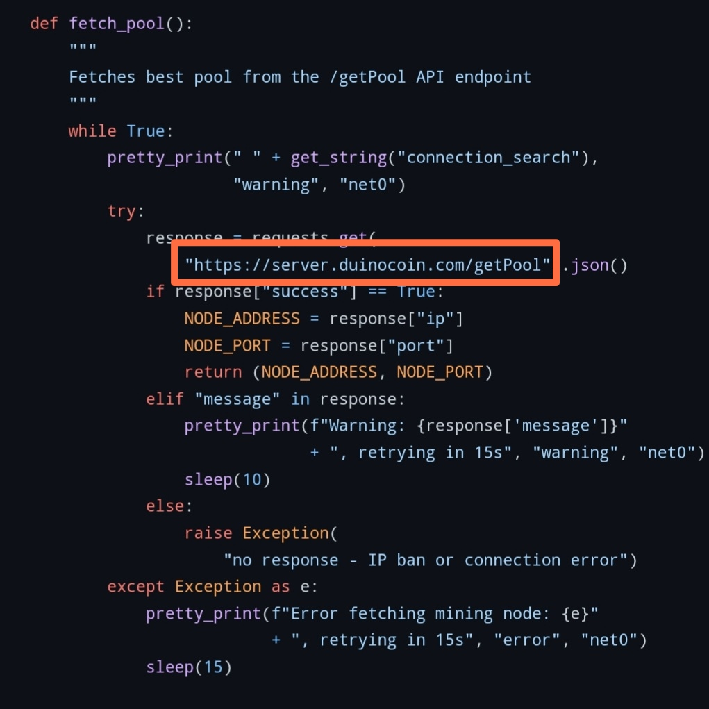

list of pools
Edit "PC_miner.py" file to use alternative pool api
Change the url "https://server.duinocoin.com/getPool" to "https://dnjswndbf.github.io/duino-pool-api/(pool's name).html"
Example : "https://server.duinocoin.com/getPool" ---change---> "https://dnjswndbf.github.io/duino-pool-api/star.html"
I recommand to use STAR pool for stable mining